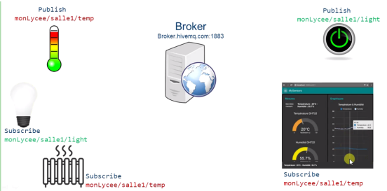
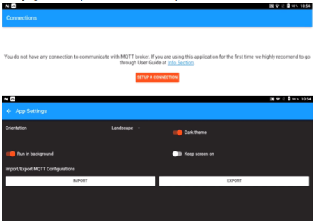
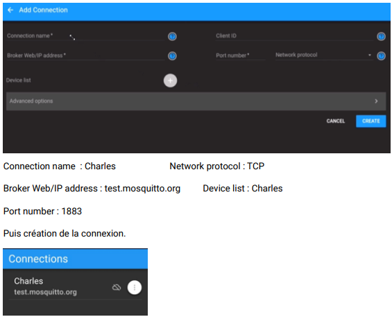
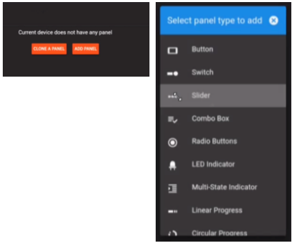
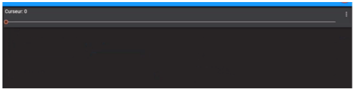
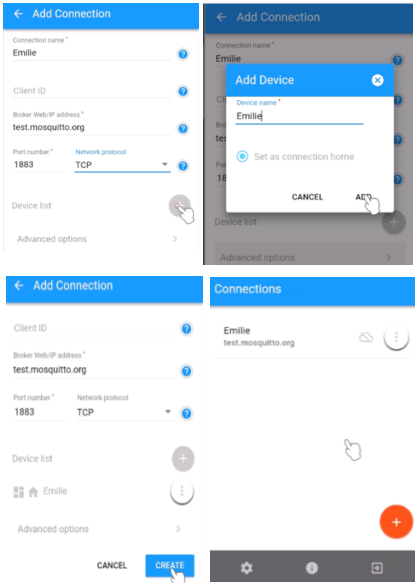
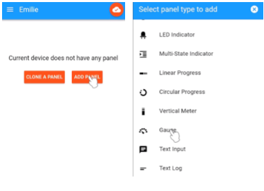
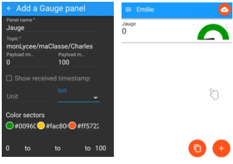
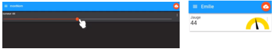

Contenus et capacités
| Contenus |
Capacités attendues |
| Interface homme-machine (IHM) |
Réaliser une IHM simple d’un objet connecté |
Cette activité porte sur la réalisation d’une IHM simple d’un objet connecté comme le téléphone. Il est possible de proposer
d’autres activités en utilisant d’autres objets comme des microcontrôleurs par exemple. Elle se présente en quatre parties.
La partie 1 explique le principe de fonctionnement de ce protocole.
La partie 2 explique comment les objets publient leurs données sur un canal appelé «topic» et comment d’autres objets peuvent
lire ces données. L’accent est mis sur la construction hiérarchique des «topics».
La partie 3 est le schéma à compléter par des flèches de couleurs différentes permettant de distinguer les clients qui
publient de ceux qui sont abonnés. Il est possible de poser d’autres questions concernant les différents «topics».
La partie 4 propose la création d’une IHM entre 2 smartphones en utilisant le protocole MQTT. Il est possible de faire
travailler les élèves en binôme. L’un publiant des données à l’aide d’un curseur et l’autre recevant les données à l’aide
d’une jauge.
La partie 5 propose d’enrichir l’application précédente en ajoutant d’autres capteurs.
Partie 1 - Utiliser un service de messagerie dédié à l’internet des objets
Le protocole MQTT permet à divers objets de publier des informations (par exemple une sonde de température peut
publier des données). Certains objets peuvent être abonnés à ces publications et donc recevoir les données. Les
objets communiquent avec un serveur nommé «Broker».
Ils peuvent être:
- «publisher» c’est-à-dire qu’ils peuvent publier des données sur des sujets;
- «subscriber» c’est-à-dire abonnés à des sujets.
Bleu foncé: Subscribe to temperature
Bleu clair: Publish temperature
Partie 2
Pour différencier les différents services, les objets publient leurs résultats dans des «topics». Les topics
s’écrivent en utilisant un format permettant plusieurs niveaux, chaque niveau est séparé par un slash «/».
Par exemple:
- smarthome/chambre/temperature
- smarthome/chambre/light
Question 1
Pourquoi dit-on que les topics sont construits de manière hiérarchique ?
Question 2
Que fait le client 1 ? Le client 2 ? Le client 3 ?
Partie 3
Compléter le schéma suivant par des flèches de couleurs différentes permettant de distinguer les clients qui publient
de ceux qui sont abonnés.

Partie 4 - Création d’un IHM entre 2 téléphones utilisant le protocole MQTT
Pour celui qui publie: |
Pour celui qui souscrit: |
-
Installation de l'application "IoT MQTT" sur son smartphone (Android)
-
Réglage suivant que l’on utilise un smartphone ou une tablette.

-
Création d’une connexion à un serveur pour Charles.

-
Cliquer sur votre connexion et ajouter un panel comme un curseur (slider)

Régler le panel avec notamment le topic : monLycee/maClasse/Charles

On peut modifier la valeur du curseur.
|
- Les étapes 1 et 2 précédantes sont communes.
-
Création d’une connexion à un serveur pour Émilie.

-
Cliquer sur votre connexion et ajouter un panel comme une jauge (gauge)

Régler le panel avec notamment le topic : monLycee/maClasse/Charles

|
Connexion entre Charles et Émile

Lorsque Charles modifie la valeur de son curseur, Émilie voit sa jauge se modifier automatiquement.
Partie 5
Enrichir l'application:
- Élève 1: rajouter un panel avec un «switch» qui publie sur le topic au format monLycee/maClasse/nomEleve1/switch
- Écrire votre topic: le paramètre «Payload on» sera réglé avec on et le paramètre «Payload off» avec off
-
Élève 2: rajouter un panel avec une «led» qui est abonnée au topic écrit précédemment. Le paramètre «Payload on» sera
réglé avec on et le paramètre «Payload off» avec off.La couleur de la «led on» sera réglée sur #FF0000, la couleur de
la «led off» sera réglée sur #00FF00
- Vérifier que la commutation du switch fait changer la couleur de la led sur l’autre smartphone